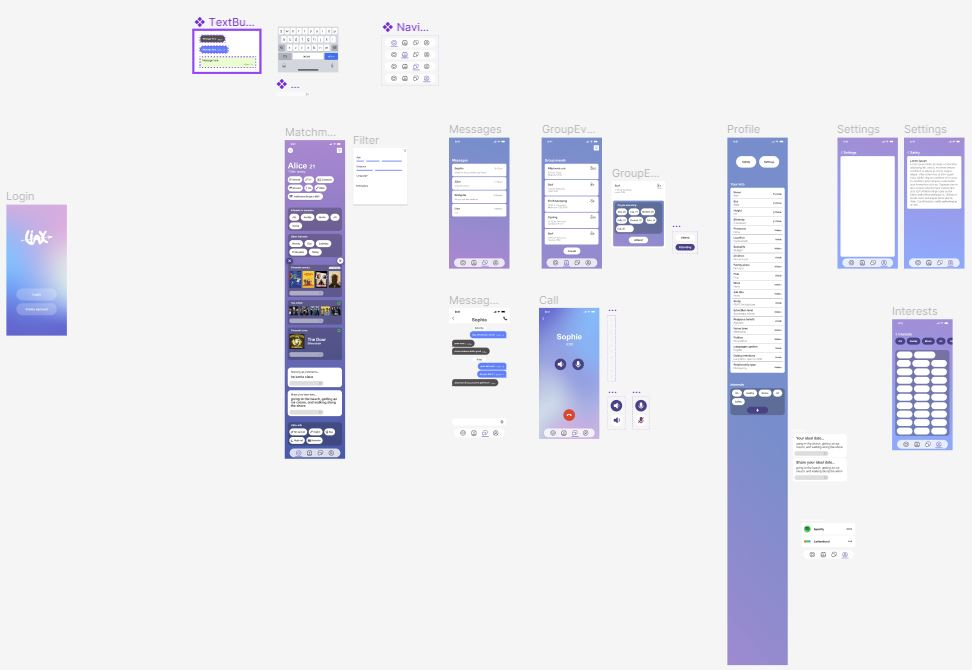

Dating app prototype “Linx” & product video
Linx is a dating app that connects people through their personality first, backed by a 50-second product video that shows how it works.
- Type
- University project, Collaboration (DMS2, Assignment 2)
- My role
- Concept, UX/UI design, prototype, pitch and product video
- Year
- 2024
- Tools
- Figma, After Effects
The story behind it
Most dating apps lead with photos. I wanted to see what would happen if people got to know each other through their personality first, so matches feel like they could actually lead somewhere. My goal was a dating app with a simple, recognisable interface that works for both new and existing dating app users.
[Add a personal line: what made you pick dating apps, or what frustrated you about them.]
The brief
This was Assignment 2 for Collaboration (DMS2): design an app concept and pitch it with slides and a short video.
[Add the exact brief wording.]
Research & concept
Existing apps. I analysed the dating app market to see the range of features out there. There are hundreds of apps, many serving a niche such as a particular personality type or religion, but few that are personality-based. Photo-anonymous apps like Lovetastic and Masked Love don’t offer prompts or push users to share specific personality details, so it’s harder to picture who someone is from a bio. That gap is the one Linx aims at.
Empathy map and user journey. An empathy map gave me a clearer view of users’ needs and frustrations, which I used to shape the solutions in Linx. The user journey map showed that the app’s structure is fairly simple, and I used it as a guide for my first wireframes. I wanted to focus on the two core components, matchmaking and group events.
Design process
Paper wireframes. I started with sketches and used paper cutouts to quickly try out the spacing of features and different layouts.
Low fidelity prototype. I then iterated on the sketches digitally. The layout stayed much the same, with some small adjustments now that I could see it on screen, and I tested its usability throughout.
Mockup. The final interface is built around Nielsen’s usability heuristics (Nielsen, 1994). I kept the look and layout consistent across the app, and consistent with other dating apps too, since most users will have used one before. I also followed a Figma tutorial on Tinder-style card swipes to build interactive swiping into the prototype.

How Linx works
People connect through prompts, such as “Share your ideal date”, and through personality details like a favourite song linked from Spotify. Once two people are connected they can message, share photos and video call, and the app also supports group events.
To keep matches meaningful, photos aren’t the opening move. After two users have been matched for ten days and exchanged twenty messages, a preselected album of photos is sent to each of them. To keep people engaged, Linx suggests icebreakers if a match hasn’t messaged, and sends notifications for matches and likes.
Measuring success
I planned to judge how well the design works by tracking:
- The percentage of matches that reach the photo sharing stage
- The length of message chains
- How often and how much people use the app, as a measure of retention
- The like and dislike ratio of swipes
- The number of group events created and attended
- Satisfaction ratings from surveys and reviews
The product video
The 50-second video, shown during the pitch, walks through Linx’s features on a phone mockup with simple captions such as “connect through prompts” and “after connecting with another user, you’ll be able to share photos and video call”. I followed a tutorial on animated gradients in After Effects for the motion, and the sound is free-to-use (CC0) material from Pixabay: two whoosh effects and the track “Futuristic Beat”.
[Add what you used to edit and put the video together.]
Goals & benefits
With Linx I want to change how we date, by giving people a place to build authentic connections that start from shared interests and values. By going after this gap in the market, I also hope to push competing apps to put more emphasis on personality.
Reflection
[What worked, what you would do differently, and what you learned about designing an app.]
References
- Nielsen J (1994) 10 Usability Heuristics for User Interface Design, Nielsen Norman Group
- Free Apps for Me (2024) 11 Best Dating Apps without Pictures (Android & iOS)
- Full Stack Designer (2022) ‘Tinder Card Swipe with Interactive Components | Figma Advanced Prototyping’ [video], YouTube
- P A N T E R (2023) ‘How to Create Animated Gradient in After Effects’ [video], YouTube
- Pixabay: “Whoosh”, “Ambient Metal Whoosh 2” and “Futuristic Beat” (CC0)